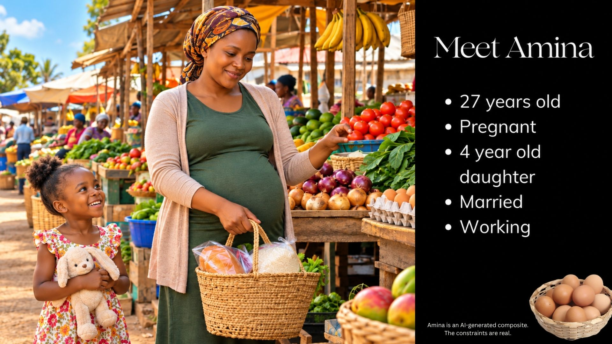

Team Project · Data Analysis · Storytelling
Maternal & Child
Nutrition Analysis
A collaborative data project exploring maternal and child nutrition outcomes across countries under economic and food-security constraints. Our team placed 3rd in the Women in Data Datathon 2026.
MY ROLE
Data Cleaning & Analysis
TEAM
4 Members
OUTCOME
3rd Place
Python
Pandas
BigQuery
Data Cleaning
HTML/CSS
Video Editing
Data Storytelling
Data & Analysis
- Cleaned and standardized nutrition, food security, and healthy diet datasets.
- Aligned country identifiers using M49 and ISO3 codes across multiple data sources.
- Prepared datasets for merging, analysis, and visualization.
- Contributed to the analysis and collaborated with the team on the final project.
Storytelling & Presentation
- Created the narrative concept and storyline for “Amina,” an AI-generated character designed to turn the team’s data findings into a human-centered story.
- Edited and produced the final project video, combining narrative, visuals, and analytical findings.
- Built and updated the HTML/CSS website used to present the team’s findings.

WOMEN IN DATA · 2026
3RD PLACE